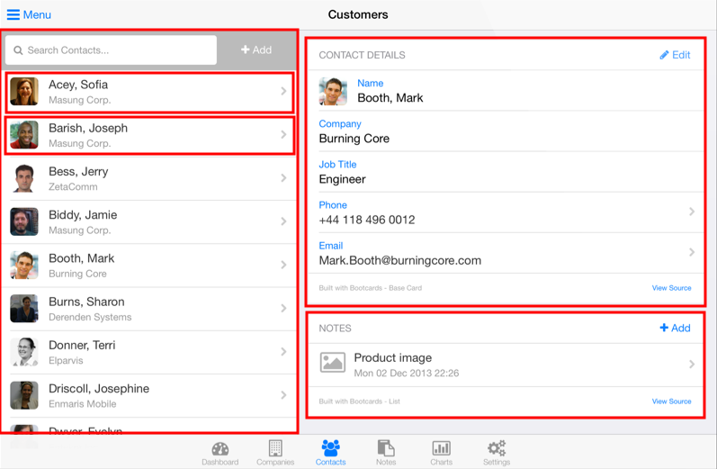

# Angular Get started with and understand the basics of [Angular][angular], the JavaScript front-end web application framework. This tutorial is a condensed version of Angular's [Tour of Heroes][angular-tour-of-heroes] tutorial and some of its [Developer Guide][angular-guide], which you should both read to gain a deeper understanding of Angular. This material is part of the [mobile development course](https://github.com/MediaComem/comem-devmobil) for [Media Engineering](https://heig-vd.ch/formations/bachelor/filieres/ingenierie-des-medias). **You will need** * [Google Chrome][chrome] (recommended, any browser with developer tools will do) **Recommended reading** * [JavaScript][js] * [JavaScript classes][js-classes] * [JavaScript modules][js-modules] * [TypeScript][ts-subject] --- class: center, middle, image-header ## What is Angular? .breadcrumbs[<a href="#1">Angular</a>] <p class='center'></p> > "Angular is a complete **JavaScript front-end web application framework** created by Google to address many of the challenges of developing **rich single-page applications**." --- ### Traditional Model-View-Controller (MVC) architecture .breadcrumbs[<a href="#1">Angular</a> > <a href="#2">What is Angular?</a>] In traditional MVC frameworks, the application's **Controllers** receive the user's requests when navigating from page to page in the browser, and respond by generating HTML **Views** from the **Model**. <img src='images/mvc.png' width='100%' /> --- ### DOM manipulation and AJAX requests .breadcrumbs[<a href="#1">Angular</a> > <a href="#2">What is Angular?</a>] .grid-60[ Serving dynamic HTML from the server works, but each user action requires that a **complete page be loaded** from the server. To improve user experience: * [AJAX][ajax] was developed in 1999 to retrieve data from the server asynchronously in the background * [jQuery][jquery] was released in 2006 to simplify DOM manipulation and AJAX requests ] .grid-40[ <img src='images/jquery-ajax.gif' class='w100' /> ] .container[ This allows you to load data from the server in the background and **dynamically update the page** without reloading. Initially, these technologies were used to **enrich** existing HTML pages that were still built and served by a traditional MVC framework. ] --- ### Single-page applications .breadcrumbs[<a href="#1">Angular</a> > <a href="#2">What is Angular?</a>] .grid-50[ A single-page application (SPA) is a web application that **fits on a single web page** but provides a user experience similar to that of a **desktop application**: * All content is retrieved with a **single page load or loaded dynamically** * The page **does not reload** (location hash or [HTML 5 History API][html-history-api] to navigate between logical pages) * Dynamic **communication with the web server** behind the scenes ] .grid-50[ <img src='images/spa.png' width='100%' /> ] --- ### Dynamic HTML with Angular .breadcrumbs[<a href="#1">Angular</a> > <a href="#2">What is Angular?</a>] > "AngularJS is what HTML would have been, had it been designed for building web-apps." HTML is great for displaying static documents, but is not so good at describing the **dynamic views** needed for **rich, interactive applications**. With Angular, you can: * **Automatically bind data** to HTML elements * **Extend the HTML vocabulary** with new elements and attributes * **Isolate** your application logic from how the data is displayed --- ### Evolution of Angular .breadcrumbs[<a href="#1">Angular</a> > <a href="#2">What is Angular?</a>] Angular is one of the most popular client-side frameworks, and it is still evolving. Starting with version 2 of the framework (released in June 2016) you can take advantage of: * [TypeScript][ts]: a superset of JavaScript with optional typing and the latest ECMAScript features * [Web components][web-components]: a way to create reusable user interface widgets * And more... --- class: center, middle ## Getting started .breadcrumbs[<a href="#1">Angular</a>] --- ### Starter template .breadcrumbs[<a href="#1">Angular</a> > <a href="#8">Getting started</a>] You can clone the following project for the exercises in this tutorial: [COMEM+ Angular Starter Project][angular-starter] You should keep your [developer console][chrome-dev] open throughout this tutorial to detect errors in your code. --- ### Overview .breadcrumbs[<a href="#1">Angular</a> > <a href="#8">Getting started</a>] .grid-50[ **Angular elements** * Modules * Components * Directives * Services * HTTP * Pipes ] .grid-50[ **Angular concepts** * Interpolation * Data binding * Dependency injection * Observables & reactive programming * Form validation ] --- ### Modules .breadcrumbs[<a href="#1">Angular</a> > <a href="#8">Getting started</a>] An Angular application is a **module**. You can find one in `src/app/app.module.ts` in the starter project: ```ts import { BrowserModule } from '@angular/platform-browser'; import { NgModule } from '@angular/core'; import { AppComponent } from './app.component'; `@NgModule`({ declarations: [ AppComponent ], imports: [ BrowserModule ], providers: [], bootstrap: [AppComponent] }) export `class AppModule` { } ``` A module is a way to help organize related things (components, services, etc) together. --- #### Basic module definition .breadcrumbs[<a href="#1">Angular</a> > <a href="#8">Getting started</a> > <a href="#11">Modules</a>] Take a look at the [`@NgModule`][angular-docs-ng-module] annotation: ```ts @NgModule({ `declarations`: [ AppComponent ], `imports`: [ BrowserModule ], `providers`: [], `bootstrap`: [AppComponent] }) ``` * The **declarations** array is a list of components (also directives and pipes) which belong to this module. * The **imports** array is a list of other modules whose exported components should be available in this module. It allows you to express a dependency on another module. * The **providers** array is a list of service providers (more about that later). * **bootstrap** is the root component that Angular creates and inserts into `index.html` --- ### Components .breadcrumbs[<a href="#1">Angular</a> > <a href="#8">Getting started</a>] Components are the most basic **building block** of an UI in an Angular application. An Angular application is a tree of Angular components. You will find a component in `src/app/app.component.ts` in the starter project: ```ts import { Component } from '@angular/core'; `@Component`({ selector: 'app-root', templateUrl: './app.component.html', styleUrls: ['./app.component.css'] }) export `class AppComponent` { title: string; constructor() { this.title = 'app'; } } ``` A component is any [JavaScript class][js-classes] annotated with the [`@Component`][angular-docs-component] decorator. Let's dig into that line by line. --- #### Component selector .breadcrumbs[<a href="#1">Angular</a> > <a href="#8">Getting started</a> > <a href="#13">Components</a>] The `selector` property of the `@Component` decorator indicates what tag you should put in your HTML to instantiate the component: ```ts @Component({ `selector: 'app-root'`, templateUrl: './app.component.html', styleUrls: ['./app.component.css'] }) ``` Open `src/index.html` in the starter project. You will find the `<app-root>` tag: ```html <body> `<app-root></app-root>` </body> ``` --- #### Component template .breadcrumbs[<a href="#1">Angular</a> > <a href="#8">Getting started</a> > <a href="#13">Components</a>] The `templateUrl` property of the `@Component` decorator tells Angular which HTML file to use to display the component: ```ts @Component({ selector: 'app-root', `templateUrl: './app.component.html'`, styleUrls: ['./app.component.css'] }) ``` For very simple components, you can also use `template` instead of `templateUrl` to use an **inline template**: ```ts @Component({ selector: 'app-root', `template: '<h1>Welcome to {{ title }}!</h1>'`, styleUrls: ['./app.component.css'] }) ``` --- #### Component styles .breadcrumbs[<a href="#1">Angular</a> > <a href="#8">Getting started</a> > <a href="#13">Components</a>] Similarly, the `styleUrls` property is a list of CSS files to apply to the component: ```ts @Component({ selector: 'app-root', templateUrl: './app.component.html', `styleUrls: ['./app.component.css']` }) ``` It's also possible to use **inline styles** for very simple components: ```ts @Component({ selector: 'app-root', templateUrl: './app.component.html', `styles: [ 'h1 { font-weight: normal; }' ]` }) ``` Styles in Angular are **modular**. They apply only *within the template of that component*. Read the [Component Styles][angular-component-styles] documentation to learn more. --- ### Data binding .breadcrumbs[<a href="#1">Angular</a> > <a href="#8">Getting started</a>] You can display data by **binding** parts of an HTML template to properties of a component. There is already a `title` property in `AppComponent` in `src/app/app.component.ts`: ```ts export class AppComponent { `title: string;` constructor() { this.title = 'app'; } } ``` Enclosing a component's property name in double curly braces in the template is called **interpolation**. This is already done in the `AppComponent`'s template in `src/app/app.component.html`: ```html <h1> Welcome to `{{ title }}`! </h1> ``` --- #### Attribute binding .breadcrumbs[<a href="#1">Angular</a> > <a href="#8">Getting started</a> > <a href="#17">Data binding</a>] Let's see what else we can interpolate. Add a `titleComment` property to the component in `src/app/app.component.ts`: ```ts export class AppComponent { title: string; `titleComment: string;` constructor() { this.title = 'app'; `this.titleComment = 'This is awesome!';` } } ``` Angular's `[]` syntax allows you to bind the value of a DOM element's **attribute** to one of the component's variables. You can do this in `src/app/app.component.html`: ```html <h1 `[title]='titleComment'`> Welcome to {{ title }}! </h1> ``` --- ##### To bind, or not to bind .breadcrumbs[<a href="#1">Angular</a> > <a href="#8">Getting started</a> > <a href="#17">Data binding</a> > <a href="#18">Attribute binding</a>] Note the two ways to interpolate attributes. Here, as in the previous example, the `[]` syntax **binds the the `title` attribute** to the `titleComment` variable: ```html <h1 `[title]='titleComment'`> Welcome to {{ title }}! </h1> ``` Here, the `title` attribute itself is not bound, but its **value is interpolated** with the `{{ }}` syntax. The behavior will be the same as the previous example: ```html <h1 title='`{{ titleComment }}`'> Welcome to {{ title }}! </h1> ``` Here, we made a **mistake**. We neither bound the attribute, nor used interpolation in its value, so the value of the attribute will be the string `"titleComment"`, not the value of the corresponding variable: ```html <h1 title='titleComment'> Welcome to {{ title }}! </h1> ``` --- #### Binding to events .breadcrumbs[<a href="#1">Angular</a> > <a href="#8">Getting started</a> > <a href="#17">Data binding</a>] Let's imagine that we want to log something when the user clicks on the title. Add an `onTitleClicked()` function to the component in `src/app/app.component.ts`: ```ts export class AppComponent { // ... * onTitleClicked() { * console.log('The title was clicked'); * } } ``` Angular's `()` syntax allows you to **bind functions to events** from a DOM element. Let's bind the function we just added to click events on the `<h1>` tag in `src/app/app.component.html`: ```html <h1 [title]='titleComment' `(click)='onTitleClicked()'`> Welcome to {{ title }}! </h1> ``` You should now see the message being logged in the console when clicking on the title. --- ##### Getting at the event .breadcrumbs[<a href="#1">Angular</a> > <a href="#8">Getting started</a> > <a href="#17">Data binding</a> > <a href="#20">Binding to events</a>] You might need the actual [event object][dom-event] to get some data out of it (e.g. the click coordinates). Let's update `onTitleClicked()` in `src/app/app.component.ts` to also log the event object: ```ts export class AppComponent { // ... onTitleClicked(`event`) { console.log('The title was clicked'`, event`); } } ``` To make it work, simply add the special `$event` variable to your function call in `src/app/app.component.html`, and Angular will pass the event object to your function: ```html <h1 [title]='titleComment' (click)='onTitleClicked(`$event`)'> Welcome to {{ title }}! </h1> ``` --- #### Interpolation with functions .breadcrumbs[<a href="#1">Angular</a> > <a href="#8">Getting started</a> > <a href="#17">Data binding</a>] Interpolation is not limited to simple properties. You can also use a component's **methods** in the template. Add the following method to the component in `src/app/app.component.ts`: ```ts export class AppComponent { // ... * hello(name: string): string { * return \`Hello ${name}`; * } } ``` Now use that function in the template in `src/app/app.component.html`: ```html <p> `{{ hello("World") }}` </p> ``` --- ## User input .breadcrumbs[<a href="#1">Angular</a>] One of the things you will need to do is **react to user input** (e.g. through forms). Let's make our greeting **dynamic** by adding an input field to customize the name. Make the following changes to the component in `src/app/app.component.ts`: ```ts export class AppComponent { // ... `greeting: string;` constructor() { this.title = 'app'; `this.greeting = '';` } // ... } ``` Now interpolate that new property into the `hello` function in the template in `src/app/app.component.html`: ```html <p> {{ hello(`greeting`) }} </p> ``` --- ### `ngModel` .breadcrumbs[<a href="#1">Angular</a> > <a href="#23">User input</a>] Add an input field to the template above the greeting in `src/app/app.component.html`: ```html *<p> * <input type='text' placeholder='Who are you?' [(ngModel)]='greeting' /> *</p> <p> {{ hello(greeting) }} </p> ``` `[(ngModel)]` is Angular's **two-way data binding** syntax. It binds the `greeting` property to the HTML input field. You will most likely get this error: ``` Uncaught Error: Template parse errors: Can't bind to 'ngModel' since it isn't a known property of 'input'. ``` This is because `[(ngModel)]` belongs to the optional `FormsModule`, which you have to *opt in* to using. --- #### `FormsModule` .breadcrumbs[<a href="#1">Angular</a> > <a href="#23">User input</a> > <a href="#24">`ngModel`</a>] To **import** the module into your application, you must add it to the `imports` array of your own module in `src/app/app.module.ts`: ```ts // Other imports... *import { FormsModule } from '@angular/forms'; @NgModule({ declarations: [ AppComponent ], imports: [ BrowserModule, `FormsModule` ], providers: [], bootstrap: [AppComponent] }) export class AppModule { } ``` Once you've done that, the field should display correctly. Note that as you type in the input field, the `greeting` variable is **automatically kept up-to-date**, and Angular **updates the template** to reflect its new value. --- ### Two-way data binding .breadcrumbs[<a href="#1">Angular</a> > <a href="#23">User input</a>] .grid-50[ Traditional templating systems bind data **in only one direction**. The developer has to write code that constantly syncs the view with the model and vice versa. <img src='images/one-way-data-binding.png' width='100%' /> ] .grid-50[ With Angular changes are **immediately reflected** in both view and model. Also note that our **component** is **isolated from and unaware of the view**: it does not care about DOM manipulation or rendering concerns. <img src='images/two-way-data-binding.png' width='100%' /> ] --- ## Directives .breadcrumbs[<a href="#1">Angular</a>] A **directive** is a class with a `@Directive` decorator. The **component** that we've seen before is a *directive-with-a-template*. A `@Component` decorator is actually a `@Directive` decorator extended with template-oriented features. Two other kinds of directives exist: **structural** and **attribute** directives. --- ### Structural directives .breadcrumbs[<a href="#1">Angular</a> > <a href="#27">Directives</a>] Structural directives are responsible for HTML layout. They shape or reshape the **DOM's structure**, typically by **adding, removing, or manipulating elements**. Let's add the [`ngIf`][angular-docs-ng-if] directive to our template in `src/app/app.component.html` as an example: ```html <p `*ngIf='greeting'`> {{ hello(greeting) }} </p> ``` As you can see, the entire paragraph is now removed from the DOM as long as the `greeting` property is blank (e.g. `undefined` or an empty string). It is added back as soon as `greeting` has a value. Read the [documentation][angular-structural-directives] to learn more about structural directives. Many more such directives are provided by Angular out of the box, like [`ngFor`][angular-docs-ng-for] (which we'll use later) and [`ngSwitch`][angular-docs-ng-switch]. --- ### Attribute directives .breadcrumbs[<a href="#1">Angular</a> > <a href="#27">Directives</a>] An **attribute** directive changes the **appearance or behavior of a DOM element**. Create a `src/app/highlight.directive.ts` file with the following contents: ```ts import { Directive } from '@angular/core'; `@Directive`({ selector: '[appHighlight]' }) export `class HighlightDirective` { constructor() { console.log('the highlight directive was used'); } } ``` Similarly to a component, a directive is a JavaScript class, this time annotated with the [`@Directive`][angular-docs-directive] decorator. The selector, `[appHighlight]` is an [attribute selector][css-attribute-selector]. Also note that it is good practice to prefix the selector with your application name ("app" for this example) to avoid **naming collisions** with other directives. --- #### Using an attribute directive .breadcrumbs[<a href="#1">Angular</a> > <a href="#27">Directives</a> > <a href="#29">Attribute directives</a>] To use your new attribute directive, you must **declare** it in your module's `declarations` array in `src/app/app.module.ts`: ```ts *import { HighlightDirective } from './highlight.directive'; // Other imports... @NgModule({ declarations: [ AppComponent, `HighlightDirective` ], // ... }) export class AppModule { } ``` Now all you need to do is add the attribute to an element in `src/app/app.component.html`. Let's add it to the greeting. ```html <h1 [title]='titleComment' (click)='onTitleClicked($event)' `appHighlight`> Welcome to {{ title }}! </h1> ``` You should see the directive being used in the console after entering some text in the input field. --- #### Modifying the DOM .breadcrumbs[<a href="#1">Angular</a> > <a href="#27">Directives</a> > <a href="#29">Attribute directives</a>] Now add an `ElementRef` argument to the directive's constructor in `src/app/highlight.directive.ts`: ```ts import { Directive, `ElementRef` } from '@angular/core'; @Directive({ selector: '[appHighlight]' }) export class HighlightDirective { constructor(`el: ElementRef`) { `el.nativeElement.style.backgroundColor = 'yellow';` } } ``` Doing this **injects** a reference to the host DOM element, the element to which you applied the `appHighlight` attribute. `ElementRef` grants direct access to the host DOM element through its `nativeElement` property. In this example we set the background color to yellow. --- ### Common directives .breadcrumbs[<a href="#1">Angular</a> > <a href="#27">Directives</a>] These common directives are provided by Angular out of the box: * [`ngClass`][angular-docs-ng-class] - Adds and removes **CSS classes** on an HTML element. * [`ngFor`][angular-docs-ng-for] - Instantiates a template **once per item** from an iterable. * [`ngIf`][angular-docs-ng-if] - **Conditionally includes** a template based on the value of an expression. * [`ngModel`][angular-docs-ng-model] - **Two-way binding** between a form's input field and a component's variable. * [`ngPlural`][angular-docs-ng-plural] - Adds/removes DOM sub-trees based on a numeric value. (Tailored for **pluralization**.) * [`ngStyle`][angular-docs-ng-style] - Update an HTML element's **styles**. * [`ngSwitch`][angular-docs-ng-switch] - Adds/removes DOM sub-trees when the nest match expressions matches the **switch** expression. --- ## Models .breadcrumbs[<a href="#1">Angular</a>] Let's make our application funny by adding some jokes. It's good practice to create **classes** for your **business models**. A TypeScript class with clearly defined fields and types will help us avoid mistakes in our code. Let's start with a very simple one. Angular CLI comes with scaffolding tools to help you create files. Install it, then generate a model class (the second command must be run in the project's directory): ```bash $> npm install -g @angular/cli $> ng generate class models/joke ``` This will create a `src/app/models/joke.ts` file. Open it and add a `text` attribute to our new `Joke` class: ```ts export class Joke { `text: string;` } ``` --- ### Using models .breadcrumbs[<a href="#1">Angular</a> > <a href="#33">Models</a>] Let's add some jokes to our component in `src/app/app.component.ts`: ```ts // Other imports... `import { Joke } from './models/joke';` @Component({ selector: 'app-root', templateUrl: './app.component.html', styleUrls: ['./app.component.css'] }) export class AppComponent { title: string; greeting: string; `jokes: Joke[];` constructor() { this.title = 'app'; this.greeting = ''; * this.jokes = [ * { text: 'Knock knock' }, * { text: 'The cake is a lie' } * ]; } // ... } ``` --- ### Using `ngFor` .breadcrumbs[<a href="#1">Angular</a> > <a href="#33">Models</a>] Now that we have some jokes, let's display them. We want a `<ul>` list, with a `<li>` item for each joke. That's a job for the [`ngFor`][angular-docs-ng-for] directive. Add this at the bottom of the component's template in `src/app/app.component.html`: ```html <ul> <li *ngFor='let joke of jokes'>{{ joke.text }}</li> </ul> ``` The directive handles repeating the `<li>` element for us. No need to write it multiple times, or to manually build and concatenate DOM elements in the component's TypeScript code. --- ### Using `ngPlural` .breadcrumbs[<a href="#1">Angular</a> > <a href="#33">Models</a>] While we're at it, let's also add a header above the list: ```html <h2> {{ jokes.length }} jokes </h2> ``` You might notice that we'll have a minor problem when there is only one joke. It will say "1 jokes" instead of "1 joke". The [`ngPlural`][angular-docs-ng-plural] directive comes to the rescue: ```html <h2 `[ngPlural]='jokes.length'`> {{ jokes.length }} * <ng-template ngPluralCase='=1'>joke</ng-template> * <ng-template ngPluralCase='other'>jokes</ng-template> </h2> ``` --- ## Pipes .breadcrumbs[<a href="#1">Angular</a>] When primitive values or objects are interpolated into a template, they are serialized by Angular using their `toString()` method. That's fine for strings, but not for everything: * What about **numbers**? You might not want to display all their decimals. * What about **currencies**? They are usually displayed in a specific format. * What about **dates**? You might want to use a simple format like `April 15, 1988` rather than the default `Fri Apr 15 1988 00:00:00 GMT-0700 (Pacific Daylight Time)`. Clearly, some values benefit from a bit of editing. Pipes allow you to define **reusable value transformations** that you can apply in your HTML templates. --- ### Implementing a pipe .breadcrumbs[<a href="#1">Angular</a> > <a href="#37">Pipes</a>] Let's implement an (amazing) pipe that adds an exclamation point to the end of a string: ```bash $> ng generate pipe --spec false pipes/exclamation ``` Implement the transformation in the generated file (`src/app/pipes/exclamation.pipe.ts`): ```ts import { Pipe, PipeTransform } from '@angular/core'; @Pipe({ name: 'exclamation' }) export class ExclamationPipe implements PipeTransform { transform(value: any, args?: any): any { * return \`${value}!`; } } ``` --- ### Using a pipe .breadcrumbs[<a href="#1">Angular</a> > <a href="#37">Pipes</a>] Note that Angular automatically registered our pipe in the module's `declarations` array in `src/app/app.module.ts`. This is necessary to be able to use it in a template: ```ts // Other imports... *import { ExclamationPipe } from './pipes/exclamation.pipe'; @NgModule({ declarations: [ AppComponent, `ExclamationPipe` ], // ... }) export class AppModule { } ``` Using the pipe is as simple as "piping" an interpolated value into it with the pipe (`|`) character in a template. You can do that in `src/app/app.component.html`, then type some text in the input field to see it: ```html <p> {{ hello(greeting)` | exclamation` }} </p> ``` --- ### Pipe parameters .breadcrumbs[<a href="#1">Angular</a> > <a href="#37">Pipes</a>] Pipe can also take **parameters**. Let's add a number parameter to allow customizing the number of exclamation points in `src/app/pipes/exclamation.pipe.ts`: ```ts import { Pipe, PipeTransform } from '@angular/core'; @Pipe({ name: 'exclamation' }) export class ExclamationPipe implements PipeTransform { transform(value: any`, strength: number = 1`): any { * const exclamation = '!'.repeat(strength); * return \`${value}${exclamation}`; } } ``` Parameters are passed to pipes by appending `:value` to them in the template in `src/app/app.component.html`: ```html <p> {{ hello(greeting) | exclamation`:3` }} </p> ``` --- ### Angular built-in pipes .breadcrumbs[<a href="#1">Angular</a> > <a href="#37">Pipes</a>] Angular provides [a few pipes][angular-docs-pipes] out of the box. Here's some of them: * [`CurrencyPipe`][angular-docs-currency-pipe] * [`DatePipe`][angular-docs-date-pipe] * [`DecimalPipe`][angular-docs-decimal-pipe] * [`LowerCasePipe`][angular-docs-lowercase-pipe], [`UpperCasePipe`][angular-docs-uppercase-pipe] & [`TitleCasePipe`][angular-docs-titlecase-pipe] * [`PercentPipe`][angular-docs-percent-pipe] Here's few usage examples for [`DatePipe`][angular-docs-date-pipe]: ```html <!-- Output: Jun 15, 2015 --> <p>Today is {{ dateValue | date }}</p> <!-- Output: Monday, June 15, 2015 --> <p>Or if you prefer, {{ dateValue | date:'fullDate' }}</p> <!-- Output: 9:43 AM --> <p>The time is {{ dateValue | date:'shortTime' }}</p> ``` Read [more about pipes][angular-pipes] in the developer guide. --- ## Services .breadcrumbs[<a href="#1">Angular</a>] Let's do something more interesting: fetch some jokes from the internet. To do it "The Angular Way", we'll encapsulate that functionality into a **service**. Why? **Components** should not try to do too much; they should focus on **presenting data** and **delegate data access** to specialized classes. **Services** are here to fill that role. This helps your components remain as simple as possible while services handle your business logic. Let's use Angular CLI to generate a joke service: ```bash $> ng generate service --spec false services/joke ``` (The `--spec false` option disables the generation of an test file for the service. We will not cover [automated tests][angular-testing] in this tutorial, but you should definitely check it out.) --- ### The joke service .breadcrumbs[<a href="#1">Angular</a> > <a href="#42">Services</a>] The `src/app/services/joke.service.ts` file has been generated: ```ts import { Injectable } from '@angular/core'; `@Injectable`() export `class JokeService` { constructor() { } } ``` Once again, a service is simply a JavaScript class, annotated with the [`@Injectable`][angular-docs-injectable] decorator. More about that later. For now, simply add a method which returns a joke: ```ts `import { Joke } from '../models/joke';` @Injectable() export class JokeService { constructor() { } * getJoke(): Joke { * return { text: 'Knock knock' }; * } } ``` --- ### Providing the joke service .breadcrumbs[<a href="#1">Angular</a> > <a href="#42">Services</a>] To use the service, you must **provide** it in your module's `providers` array in `src/app/app.module.ts`: ```ts // Other imports... `import { JokeService } from './services/joke.service';` @NgModule({ // ... providers: [ `JokeService` ], // ... }) export class AppModule { } ``` --- ### Injecting the joke service .breadcrumbs[<a href="#1">Angular</a> > <a href="#42">Services</a>] Once you've done that, you can **inject** it into your component in `src/app/app.component.ts`. You just have to add a **constructor parameter property**. While you're at it, also add a **method to add a joke**: ```ts // Other imports... *import { JokeService } from './services/joke.service'; export class AppComponent { // ... constructor(`private jokeService: JokeService`) { // ... } * addJoke() { * this.jokes.push(this.jokeService.getJoke()); * } // ... } ``` --- #### Calling a method from a button .breadcrumbs[<a href="#1">Angular</a> > <a href="#42">Services</a> > <a href="#45">Injecting the joke service</a>] To use our new method, you can add a button in the template in `src/app/app.component.html`: ```html <p> <button type='button' (click)='addJoke()'>Add joke</button> </p> ``` The `(click)` attribute is Angular's syntax to listen to the `click` event on a DOM element and trigger something when it occurs. --- ### Why does it work? .breadcrumbs[<a href="#1">Angular</a> > <a href="#42">Services</a>] Our component now uses the service. But why does it work? All you did was add a parameter property to the constructor: ```ts constructor(`private jokeService: JokeService`) { // ... } ``` As a reminder, in TypeScript this is equivalent to: ```ts export class AppComponent { `jokeService: JokeService;` constructor(`jokeService: JokeService`) { `this.jokeService = jokeService;` } } ``` You **never instantiated the service with `new`**, so where is the instance coming from? --- ### Dependency injection .breadcrumbs[<a href="#1">Angular</a> > <a href="#42">Services</a>] Angular relies on [dependency injection][di] to plug components, services and other elements together. * After creating your service, you **provided** it in the application **module**. * This makes it possible for Angular's **injector** to know that your service exists and to create instances of it. * By adding the parameter to the component's constructor, you **asked Angular to inject** an instance of the service at runtime. Dependency injection is a form of [inversion of control][ioc], meaning that parts of your code **receive** the flow of control instead of driving it like in classic procedural programming. The general goal is to: * **Decouple** the execution of a task from implementation. * **Focus** a component on the task it is designed for. * **Free components from assumptions** about how other systems do what they do and instead rely on **contracts**. * **Prevent side effects** when **replacing** a component. --- #### Why dependency injection? .breadcrumbs[<a href="#1">Angular</a> > <a href="#42">Services</a> > <a href="#48">Dependency injection</a>] .grid-50[ **Strong coupling** ```js function Car() { this.engine = new Engine(24); } function Engine(gasLead) { this.gas = new Gas(gasLead); } function Gas(lead) { this.lead = lead; } ``` <img src='images/di-new.png' width='100%' /> ] .grid-50[ **Loose coupling** (with an *injector*) ```js function Car(engine) { this.engine = engine; } function Engine(gas) { this.gas = gas; } function Gas(lead) { this.lead = lead; } ``` <img src='images/di-injection.png' width='100%' /> ] --- ## Observable data .breadcrumbs[<a href="#1">Angular</a>] Our current `getJoke()` method has a **synchronous** signature; implying that data is returned right away: ```ts const joke = jokeService.getJoke(); ``` This will **not** work when fetching jokes from a **remote server**, which is inherently an **asynchronous** operation. The `getJoke()` method must be modified to not immediately return a joke, but to have an asynchronous signature instead. It could take a **callback** or return a [**Promise**][js-promise]. Another solution is to return an **Observable**. Angular includes the [RxJS][rxjs] library for reactive programming using Observables, to make it easier to compose asynchronous or callback-based code. --- ### What (the hell) is an observable? .breadcrumbs[<a href="#1">Angular</a> > <a href="#50">Observable data</a>] An observable is an **asynchronous data stream**, meaning that it allows you to observe **multiple events over time**. <p class='center'><img src='images/promises-observables.png' class='w80' /></p> For example, a user's **mouse clicks** on a website could be easily be modeled as an observable: there will be several of them and they will happen at different times in the future. --- ### What (the hell) is reactive programming? .breadcrumbs[<a href="#1">Angular</a> > <a href="#50">Observable data</a>] Basically, **reactive programming** is programming with **asynchronous** data **streams**. <p class='center'><img src='images/reactive-programming.png' class='w50' /></p> RxJS is a library which provides an amazing toolbox of functions to **combine, create and filter** any of those streams. In Angular 2+, many asynchronous operations are represented as Observable streams. For example, making an **HTTP call** will return an **Observable** which emits either a **response** or an **error**. You may **subscribe** to that observable to be notified of the result of the asynchronous call. To learn more about reactive programming, you may want to read ["The introduction to Reactive Programming you've been missing"][intro-to-reactive-programming]. --- ### Making `getJoke()` observable .breadcrumbs[<a href="#1">Angular</a> > <a href="#50">Observable data</a>] Since Angular's `HttpClient` returns **Observables**, that's what we'll use. For now, let's modify the signature of our `getJoke()` method in `JokeService` in `src/app/services/joke.service.ts` to return an Observable, without actually making an HTTP call yet: ```ts // Other imports... *import { Observable } from 'rxjs/Observable'; *import 'rxjs/add/observable/of'; @Injectable() export class JokeService { // ... getJoke(): `Observable<Joke>` { return `Observable.of({ text: 'Knock knock' })`; } } ``` `Observable.of` allows us to create a stream which will simply emit the specified value (or values) and complete. In this case, we created an Observable which will emit one joke. --- ### Subscribing to an Observable .breadcrumbs[<a href="#1">Angular</a> > <a href="#50">Observable data</a>] Of course, the code in our component no longer works now, since it expects a `Joke` and gets an Observable of a `Joke` instead: ``` ERROR in src/app/app.component.ts(26,21): error TS2345: Argument of type 'Observable<Joke>' is not assignable to parameter of type 'Joke'. Property 'text' is missing in type 'Observable<Joke>'. ``` Use the `subscribe` method of the Observable to be notified when a Joke is emitted on the stream in `AppComponent` in `src/app/app.component.ts`: ```ts addJoke() { * this.jokeService.getJoke().subscribe(joke => { * this.jokes.push(joke); * }); } ``` We now have our **asynchronous** implementation: * We **subscribe** to the Observable when `addJoke` is called. * But the **callback** adding the new joke into the array will be called **later**, after the data has been fetched from the remote server. --- ## Making HTTP calls .breadcrumbs[<a href="#1">Angular</a>] Time to actually fetch some jokes from the internet. We'll need Angular's [`HttpClient`][angular-docs-http-client]. It is part of `HttpClientModule`, so we need to provide that to our own application module, `AppModule`, in `src/app/app.module.ts`: ```ts // Other imports... *import { HttpClientModule } from '@angular/common/http'; @NgModule({ // ... imports: [ BrowserModule, FormsModule, `HttpClientModule` ], // ... }) export class AppModule { } ``` --- ### Injecting `HttpClient` .breadcrumbs[<a href="#1">Angular</a> > <a href="#55">Making HTTP calls</a>] Earlier we annotated `JokeService` with the [`@Injectable`][angular-docs-injectable] decorator. This not only makes it available to the **injector** for creation, but also allows it to **inject dependencies of its own**. Now that `HttpClientModule` is available, you can inject `HttpClient` into `JokeService` in `src/app/services/joke.service.ts`: ```ts // Other imports... *import { HttpClient } from '@angular/common/http'; @Injectable() export class JokeService { constructor(`private httpClient: HttpClient`) { } // ... } ``` --- ### Joke API response .breadcrumbs[<a href="#1">Angular</a> > <a href="#55">Making HTTP calls</a>] The API we are going to call returns JSON data that looks like this: ```json { "type": "success", "value": { "categories": [], "id": 1, "joke": "Knock knock" } } ``` This does not fit our `Joke` model, which only has a `text` property. --- #### Joke API response model .breadcrumbs[<a href="#1">Angular</a> > <a href="#55">Making HTTP calls</a> > <a href="#57">Joke API response</a>] Let's create a new `JokeResponse` model that we can use with this API: ```bash $> ng generate class models/joke-response ``` This generates a new model file in `src/app/models/joke-response.ts`. Update it to reflect the **structure** of the API response. Since it's a nested structure, we'll need **2 classes**: ```ts export class JokeResponse { type: string; value: JokeResponseValue; } export class JokeResponseValue { categories: string[]; id: number; joke: string; } ``` --- ### Making a GET call .breadcrumbs[<a href="#1">Angular</a> > <a href="#55">Making HTTP calls</a>] We can now update `getJoke()` in `src/app/services/joke.service.ts` to make an actual HTTP call: ```ts // Other imports... *import { JokeResponse } from '../models/joke-response'; @Injectable() export class JokeService { // ... getJoke(): Observable<Joke> { * return this.httpClient * .get<JokeResponse>('https://api.icndb.com/jokes/random'); } } ``` As you can see, [`HttpClient`][angular-docs-http-client]'s `get` method is **generic**, and Angular will take care of parsing the response body and giving us an object of the right type. But we're still left with one problem: we need an Observable of `Joke` objects, and have one of `JokeResponse` objects instead: ``` ERROR in src/app/services/joke.service.ts(15,5): error TS2322: Type 'Observable<JokeResponse>' is not assignable to type 'Observable<Joke>'. Type 'JokeResponse' is not assignable to type 'Joke'. Property 'text' is missing in type 'JokeResponse'. ``` --- ### Transforming data .breadcrumbs[<a href="#1">Angular</a> > <a href="#55">Making HTTP calls</a>] We need to be able to transform a `JokeResponse` object into a `Joke`. Let's add a utility function at the bottom of the file in `src/app/services/joke.service.ts`: ```ts function convertJokeResponseToJoke(response: JokeResponse): Joke { return { text: response.value.joke }; } ``` --- ### Transforming Observable streams .breadcrumbs[<a href="#1">Angular</a> > <a href="#55">Making HTTP calls</a>] Similarly to the [`map`][js-array-map] method of JavaScript arrays, Observables have a [`map`][observable-map] operator, which allows you to transform each item emitted in the stream: <p class='center'><img src='images/observable-map.png' class='w50' /></p> To use it, you need to import it and use the Observable's `pipe` method in `JokeService` in `src/app/services/joke.service.ts`: ```ts // Other imports... *import { map } from 'rxjs/operators'; // ... getJoke(): Observable<Joke> { return this.httpClient .get<JokeResponse>('https://api.icndb.com/jokes/random') * .pipe(map(convertJokeResponseToJoke)); } ``` --- ### Reacting to errors in observable streams .breadcrumbs[<a href="#1">Angular</a> > <a href="#55">Making HTTP calls</a>] An observable stream may emit an **error**. You can be notified of that error by passing a second callback function to `subscribe` in `AppComponent` in `src/app/app.component.ts`: ```ts addJoke() { this.jokeService.getJoke().subscribe(joke => { this.jokes.push(joke); }`, err => {` `console.warn('Could not get new joke', err);` `}`); } ``` For the purpose of testing this new behavior, you can produce an error by changing the URL in `JokeService`in `src/app/services/joke.service.ts`, so that the call fails. You should then see an error in the console when adding a joke: ```ts getJoke(): Observable<Joke> { return this.httpClient .get<JokeResponse>('https://`foo.example.com`/jokes/random') .pipe(map(convertJokeResponseToJoke)); } ``` You can then change it back to the correct URL. --- ### Getting the HTTP response .breadcrumbs[<a href="#1">Angular</a> > <a href="#55">Making HTTP calls</a>] We've seen that by default, Angular's `HttpClient` returns only the **body of the response** (this is a *generic example*; do **not** make this change to the project): ```ts function getJoke(): Observable<JokeResponse> { return this.httpClient .get<JokeResponse>('https://api.icndb.com/jokes/random'); } getJoke().subscribe(jokeResponse => { // "jokeResponse" has type JokeResponse console.log(jokeResponse.value.joke); // "Chuck Norris can make a class that is both abstract and final." }); ``` That's nice, but in some cases we might need access to the **HTTP status** or **headers** sent by the server in the response. --- #### Observing the response .breadcrumbs[<a href="#1">Angular</a> > <a href="#55">Making HTTP calls</a> > <a href="#63">Getting the HTTP response</a>] To get Angular's `HttpClient` to give you the full [`HttpResponse`][angular-docs-http-response] object, you need to pass an additional options object to your HTTP call, with the `observe` property set to `"response"` (this is also a *generic example*): ```ts function getJoke(): Observable<`HttpResponse<JokeResponse>`> { `const options = { observe: 'response' };` return this.httpClient .get<JokeResponse>('https://api.icndb.com/jokes/random'`, options`); } getJoke().subscribe(httpResponse => { // "httpResponse" has type HttpResponse<JokeResponse> console.log(httpResponse.status); // 200 // "httpResponse.body" has type JokeResponse console.log(httpResponse.body.value.joke); // "Chuck Norris can make a class that is both abstract and final." }); ``` Now, you no longer get an Observable of `JokeResponse` objects, but instead get an Observable of `HttpResponse<JokeResponse>` objects. That is, the full HTTP response, with its `body` already parsed as a `JokeResponse` object. Read [the documentation of the `HttpResponse` class][angular-docs-http-response] to see what information you can extract from the response. --- ## Component interaction .breadcrumbs[<a href="#1">Angular</a>] As described earlier, components are Angular's fundamental building blocks. We're going to add a few features to our application: * The ability to **vote** on which are the best jokes. * The ability to see the **total** number of votes and how many votes the **best** joke has had. * The ability to **clear** all the collected votes. .grid-50[ We could implement all of this in `AppComponent`, but that would not be viable in a real-world scenario with more complex features. When you have a complex page with multiple areas that each have their specific logic, it's good practice to **isolate each part into a component**: ] .grid-50[ <p class='center'></p> ] --- ### Adding votes to the model .breadcrumbs[<a href="#1">Angular</a> > <a href="#65">Component interaction</a>] Update the `Joke` model in `src/app/models/joke.ts` to have a `votes` property: ```ts export class Joke { text: string; * votes: number; } ``` You need to update `src/app/app.component.ts` to set the initial votes to `0`: ```ts this.jokes = [ { text: 'Knock knock'`, votes: 0` }, { text: 'The cake is a lie'`, votes: 0` } ]; ``` You also need to update the `convertJokeResponseToJoke` function in `src/app/services/joke.service.ts`: ```ts function convertJokeResponseToJoke(response: JokeResponse): Joke { return { text: response.value.joke, * votes: 0 }; } ``` --- ### Creating a child component .breadcrumbs[<a href="#1">Angular</a> > <a href="#65">Component interaction</a>] Let's generate our **new component**, the `JokeComponent`: ```ts $> ng generate component --spec false components/joke ``` This will create a component in the `src/app/components/joke` directory, with its own TypeScript definition, HTML template and CSS styles. --- #### The `JokeComponent` .breadcrumbs[<a href="#1">Angular</a> > <a href="#65">Component interaction</a> > <a href="#67">Creating a child component</a>] The responsibility of the new `JokeComponent` will be to display a `Joke` object, and to provide a button to vote on the joke. Let's add a `joke` property to the new component in `src/app/components/joke/joke.component.ts`: ```ts // Other imports... *import { Joke } from '../../models/joke'; @Component({ selector: 'app-joke', templateUrl: './joke.component.html', styleUrls: ['./joke.component.css'] }) export class JokeComponent implements OnInit { * joke: Joke; // ... } ``` And update the component's template in `src/app/components/joke/joke.component.html` to display the joke's text: ```html {{ joke.text }} ``` --- ### Passing data from parent to child with input binding .breadcrumbs[<a href="#1">Angular</a> > <a href="#65">Component interaction</a>] We want the joke to be provided by the parent component, `AppComponent`. It's an **input** of the `JokeComponent`. Annotating a component's property with the [`@Input`][angular-docs-input] decorator marks it as an **input property** which can be set by a parent component. You can do this in `src/app/components/joke/joke.component.ts`: ```ts // Other imports... import { Component, `Input`, OnInit } from '@angular/core'; // ... export class JokeComponent implements OnInit { `@Input()` joke: Joke; // ... } ``` You can now use the `JokeComponent` in the main component's template in `src/app/app.component.html`. You need to create an `<app-joke>` tag (matching the component's selector), and to set the `joke` input property: ```html <ul> <li *ngFor='let joke of jokes'>`<app-joke [joke]='joke'></app-joke>`</li> </ul> ``` --- ### Voting on jokes .breadcrumbs[<a href="#1">Angular</a> > <a href="#65">Component interaction</a>] Now that `JokeComponent` is working, we can use it to **handle the logic related to one joke**, like voting. Add a `vote()` method to `JokeComponent` in `src/app/components/joke/joke.component.ts`: ```ts vote() { this.joke.votes++; } ``` Add these 2 lines to the component's template in `src/app/components/joke/joke.component.html`: ```html {{ joke.text }} *({{ joke.votes }} votes) *<button type='button' (click)='vote()'>+1</button> ``` You can now vote! --- ### Displaying global voting information .breadcrumbs[<a href="#1">Angular</a> > <a href="#65">Component interaction</a>] Let's now display the **total number of votes** and the **best vote** on the page. That's the job of the **main component**, since a `JokeComponent` only knows about its own joke, so it can't know the total number of votes or whether its number of votes is the highest. Add this information to `AppComponent` in `src/app/app.component.ts`: ```ts export class AppComponent { // ... * bestVote: number; * totalVotes: number; constructor(private jokeService: JokeService) { * this.bestVote = 0; * this.totalVotes = 0; // ... } // ... } ``` And display it in the template in `src/app/app.component.html`: ```html <p>Total votes: {{ totalVotes }}, best vote: {{ bestVote }}</p> ``` --- ### Output from child components .breadcrumbs[<a href="#1">Angular</a> > <a href="#65">Component interaction</a>] The vote button is in the child component's template, so `AppComponent` can't put an event listener on it directly. Instead, we need our `JokeComponent` to have an **output** that its parent can listen to. Annotating a component's property with the [`@Output`][angular-docs-output] decorator marks it as an **output property**. It must be an [`EventEmitter`][angular-docs-event-emitter] (or an Observable). Let's add one to `JokeComponent` in `src/app/components/joke/joke.component.ts` now: ```ts import { Component, `EventEmitter`, Input, OnInit, `Output` } from '@angular/core'; // ... export class JokeComponent implements OnInit { // ... * @Output() * voted: EventEmitter<Joke>; constructor() { * this.voted = new EventEmitter(); } vote() { this.joke.votes++; * this.voted.emit(this.joke); } } ``` --- ### Listening to child component events from a parent .breadcrumbs[<a href="#1">Angular</a> > <a href="#65">Component interaction</a>] Let's add an `onJokeVoted()` method to `AppComponent` in `src/app/app.component.ts`: ```ts onJokeVoted(joke: Joke) { this.totalVotes++; if (joke.votes > this.bestVote) { this.bestVote = joke.votes; } } ``` We want this method to be called every time a vote button is clicked in a child `JokeComponent`. From the parent's point of view, an **output property** of a child component is **just like any other DOM event**. You bind to it using Angular's `(event)='expression'` syntax, exactly like you bind to `(click)` on a `<button>` tag. Do that in `src/app/app.component.html`: ```html <app-joke [joke]='joke' `(voted)='onJokeVoted(joke)'`></app-joke> ``` --- ### Clearing the votes .breadcrumbs[<a href="#1">Angular</a> > <a href="#65">Component interaction</a>] Now that our components are already plugged together, adding the functionality to **clear the votes** is trivial. Add a `clearVotes()` method to the main component in `src/app/app.component.ts`. It simply resets all votes to zero, including the jokes': ```ts clearVotes() { this.bestVote = 0; this.totalVotes = 0; this.jokes.forEach(joke => joke.votes = 0); } ``` And add a button to call it in the template in `src/app/app.component.html`: ```html <button type='button' (click)='clearVotes()'>Clear votes</button> ``` It just works! The `Joke` objects in the `JokeComponent` children are the same objects as the ones in the main component's `jokes` array, bound through Angular's input properties. When you modify them in any component, Angular **automatically updates all the relevant templates**. --- ### More component interaction .breadcrumbs[<a href="#1">Angular</a> > <a href="#65">Component interaction</a>] These were just a few examples of how to communicate between components. There are other ways to do it, like injecting the same **service** into multiple components. This can be useful if two components must communicate but neither is a parent of the other, so they cannot use inputs or outputs. Read the [documentation][angular-component-interaction] to learn more. --- ## Forms .breadcrumbs[<a href="#1">Angular</a>] Angular provides **validation** services for forms and controls. These validations are performed **client-side** for a better user experience: the user gets **instant feedback**. However, keep in mind that although this provides a good user experience, it can easily be circumvented and thus **cannot be trusted**. **Server-side validation is still necessary** for a secure application. --- ### HTML validations .breadcrumbs[<a href="#1">Angular</a> > <a href="#76">Forms</a>] HTML 5 has [built-in validation attributes][html-input] to define validations on your form inputs (e.g. `<input>`, `<textarea>`, etc): Attribute | Description :--- | :--- `min` | Minimum value for a number `max` | Maximum value for a number `minlength` | Minimum length for a string `maxlength` | Maximum length for a string `pattern` | Regular expression for a string `required` | Required field You simply add them to the HTML tag: ```html <input type='text' `required minlength=2` /> ``` Usually the **browser** performs these validations. But Angular **overrides** these and provide its own implementation. This allows you to add **more complex validations and interaction**. --- ### Creating a form .breadcrumbs[<a href="#1">Angular</a> > <a href="#76">Forms</a>] Let's turn our lonely greeting input field into a proper form: * Wrap that part of the template in a `<form>` tag. * Add a `name` attribute to the input field (required by Angular). * Add a `required` attribute to the input field to have some validation. * Add a submit `<button>` tag to complete the form. ```html *<form> <p> <input type='text' placeholder='Who are you?' [(ngModel)]='greeting' `name='greeting' required` /> `<button type='submit'>Submit</button>` </p> *</form> ``` --- #### Updating the component .breadcrumbs[<a href="#1">Angular</a> > <a href="#76">Forms</a> > <a href="#78">Creating a form</a>] Let's now make it so that the greeting will only be displayed if submitted through the form. We need to add a separate property to our component: * The `greeting` property will represent the value of the input field. * The `displayedGreeting` property will represent the submitted value (which will no longer be bound to the input field). We also need a new `displayGreeting()` method which will take the current value of `greeting` and copy it to `displayedGreeting`: ```ts // ... export class AppComponent { // ... greeting: string; * displayedGreeting: string; // ... * displayGreeting() { * this.displayedGreeting = this.greeting; * console.log('Greeting displayed'); * } } ``` --- #### Listening to form submit events .breadcrumbs[<a href="#1">Angular</a> > <a href="#76">Forms</a> > <a href="#78">Creating a form</a>] Update the component's template to reflect the fact that we now want to display `displayedGreeting` instead of `greeting`: ```html <p *ngIf='displayedGreeting'> {{ hello(displayedGreeting) | exclamation:3 }} </p> ``` Bind the new `displayGreeting()` method to the form's `submit` event to make it work: ```html <form `(submit)='displayGreeting()'`> ``` --- ### Checking the validation state .breadcrumbs[<a href="#1">Angular</a> > <a href="#76">Forms</a>] You might have noticed that we have marked the input field as **required**, but that the user can **still submit the form** when it is invalid (i.e. the input field is empty). That's not very user-friendly. We're going to make the following improvements: * **Prevent the form's submission** if it has invalid fields. * **Disable the submit button** if the form has invalid fields. * **Display an error message** when the greeting input field contains an invalid value. * **Set the input field background color to red** if it contains an invalid value. --- #### Prevent the form's submission .breadcrumbs[<a href="#1">Angular</a> > <a href="#76">Forms</a> > <a href="#81">Checking the validation state</a>] In Angular, any `<form>` tag is enriched by the [`NgForm`][angular-docs-ng-form] directive. You can retrieve the instance of the directive attached to the form by using a [**template reference variable**][angular-template-reference-variable] (`#greetingForm` in this example): ```html <form `#greetingForm='ngForm'` (submit)='displayGreeting(`greetingForm`)'> ``` We can now update the implementation of `displayGreeting()` to add this new argument. [`NgForm`][angular-docs-ng-form] must be imported from `@angular/forms`. This class provides, among other things, a `valid` (or `invalid`) attribute to check whether all the fields are valid or not: ```ts *import { NgForm } from '@angular/forms'; // ... displayGreeting(`form: NgForm`) { `if (form.valid) {` this.displayedGreeting = this.greeting; console.log('Greeting displayed'); `}` } ``` --- #### Disable the submit button .breadcrumbs[<a href="#1">Angular</a> > <a href="#76">Forms</a> > <a href="#81">Checking the validation state</a>] The `#greetingForm` template reference variable is already available in the template from the previous modification, since we passed it to `displayGreeting()` as an argument. You can also bind it to DOM elements or their attributes elsewhere in the template. This time, we'll use [`NgForm`][angular-docs-ng-form]'s `invalid` attribute. We simply have to bind the value of the `<button>` tag's `disabled` attribute to it: * When the form is **invalid** (`greetingForm.invalid` is true), the button should be **disabled** (`disabled` should be true). * When the form is **valid** (`greetingForm.invalid` is false), the button should **not be disabled** (`disabled` should be false). ```html <button type='submit' `[disabled]='greetingForm.invalid'`>Submit</button> ``` --- #### Display an error message .breadcrumbs[<a href="#1">Angular</a> > <a href="#76">Forms</a> > <a href="#81">Checking the validation state</a>] We've seen that the `<form>` tag is **enriched** with the [`NgForm`][angular-docs-ng-form] **directive**, and that it's possible to **retrieve that directive** to gain access to the **form's validation state**. You can do the same with the `<input>` tag, by retrieving the field's [`NgModel`][angular-docs-ng-model]'s directive (which you applied by using `[(ngModel)]='expression'`): ```html <input type='text' placeholder='Who are you?' [(ngModel)]='greeting' name='greeting' required `#greetingInput='ngModel'` /> ``` The `NgModel` directive also has the `valid` and `invalid` attributes, indicating whether that particular field is valid. All we have to do is add an error message to the form, and, through judicious use of our old friend the `NgIf` directive, only display the message when the field is invalid. ```html <form #greetingForm='ngForm' (submit)='displayGreeting(greetingForm)'> <!-- ... --> * <p *ngIf='greetingInput.invalid'> * Name is required * </p> </form> ``` --- ##### Dirty, pristine, touched, untouched .breadcrumbs[<a href="#1">Angular</a> > <a href="#76">Forms</a> > <a href="#81">Checking the validation state</a> > <a href="#84">Display an error message</a>] That's nice, but the error message is displayed right away. It makes sense, since the **initial value** of the input field's **is actually invalid**. But that's not very user-friendly. Ideally, we would want the error message to be displayed **only once the user has interacted with the form**. Enter the following `NgForm` and `NgModel` attributes: * `dirty` - A control is **dirty** if the user has **changed its value**. * `pristine` - A control is **pristine** if the user has **not yet changed its value** (the opposite of `dirty`). * `touched` - A control is **touched** if the user has triggered a **[`blur`][blur-event] event** on it. * `untouched` - A control is **untouched** if the user has **not yet** triggered a **[`blur`][blur-event] event** on it (the opposite of `touched`). Make the following change to only display the error message after the user has started typing: ```html <p *ngIf='greetingInput.invalid` && greetingInput.dirty`'> Name is required </p> ``` --- #### Set the input field background color to red .breadcrumbs[<a href="#1">Angular</a> > <a href="#76">Forms</a> > <a href="#81">Checking the validation state</a>] Angular automatically **mirrors** many `NgModel` **properties** onto the `<input>` tag as **CSS classes**. You can use these classes to **style** form elements according to the state of the form. These are some of the supported classes ([full list][angular-form-control-status-classes]): * `.ng-valid` or `.ng-invalid` is applied depending on whether the value is valid * `.ng-pristine` or `.ng-dirty` is applied depending on whether the user has changed the value * `.ng-untouched` or `.ng-touched` is applied depending on whether the user has triggered `blur` event So when our field is invalid and dirty, it will have both the `.ng-invalid` and `.ng-dirty` CSS classes added to it. All you need to do is modify `src/app/app.component.css` to add a background color to input fields with this combination of classes: ```css input.ng-invalid.ng-dirty { background-color: #ffc0c0; } ``` --- ### Angular validators .breadcrumbs[<a href="#1">Angular</a> > <a href="#76">Forms</a>] These are some of the validators provided **out of the box** by Angular: * [`email`][angular-docs-email-validator] - Validates that a string is a valid e-mail address. * [`min`][angular-docs-min-validator] & [`max`][angular-docs-max-validator] - Validate that a number is within the specified bound(s). * [`min-length`][angular-docs-min-length-validator] & [`max-length`][angular-docs-max-length-validator] - Validate that a string's length is within the specified bound(s). * [`pattern`][angular-docs-pattern-validator] - Validates that a value matches a regular expression. * [`required`][angular-docs-required-validator] - Validates that a value is present. Here's a few usage examples: ```html <input `type='email'` name='email' /> <input type='number' name='age' `min='3' max='10'` /> <input type='text' name='firstName' `min-length='1' max-length='50'` /> <input type='text' name='lastName' `pattern='[a-zA-Z ]*'` /> <input type='text' name='occupation' `required` /> ``` --- ### Custom validators .breadcrumbs[<a href="#1">Angular</a> > <a href="#76">Forms</a>] These validators are nice, but you might need **more complex validations**. That's why Angular allows you to implement [custom validators][angular-custom-validators]. Here's an example of a validator that ensures a string is not in a list of forbidden values: ```ts import { AbstractControl, ValidationErrors, ValidatorFn } from '@angular/forms'; export function notInValidator(notIn: string[]): ValidatorFn { return (control: AbstractControl): ValidationErrors | null => { // Check if the value is invalid. if (notIn.indexOf(control.value) >= 0) { // Return an error named after the validator if that is the case. return { notIn: { value: control.value } }; } // Otherwise, all is well, there is no error. return null; }; } ``` --- #### Registering a custom validator .breadcrumbs[<a href="#1">Angular</a> > <a href="#76">Forms</a> > <a href="#88">Custom validators</a>] To use your validation function in a form, you need to wrap it in a directive: ```ts import { Directive, Input } from '@angular/core'; import { AbstractControl, NG_VALIDATORS, ValidationErrors, Validator } from '@angular/forms'; import { notInValidator } from './not-in-validator'; @Directive({ selector: '[notIn]', providers: [ { provide: NG_VALIDATORS, useExisting: NotInValidatorDirective, multi: true } ] }) export class NotInValidatorDirective implements Validator { @Input('notIn') notIn: string[]; validate(control: AbstractControl): ValidationErrors | null { return notInValidator(this.notIn)(control); } } ``` --- #### Using a custom validator .breadcrumbs[<a href="#1">Angular</a> > <a href="#76">Forms</a> > <a href="#88">Custom validators</a>] You must register the new directive in the module's `declarations` array: ```ts // Other imports... *import { NotInValidatorDirective } from './validators/not-in-validator-directive'; @NgModule({ declarations: [ AppComponent, ExclamationPipe, `NotInValidatorDirective` ], // ... }) export class AppModule { } ``` You can then finally use it in the template: ```html <input type='text' placeholder='Who are you?' [(ngModel)]='greeting' name='greeting' required `[notIn]='["Bob"]'` #greetingInput='ngModel' /> ``` --- ### Displaying different messages for different errors .breadcrumbs[<a href="#1">Angular</a> > <a href="#76">Forms</a>] There's a little problem now. Since our error message is displayed as soon as there's an error on the `greetingInput` field, it always displays `Name is required`, even if the error is due to our new custom validator. ```html <p *ngIf='`greetingInput.invalid` && greetingInput.dirty'> Name is required </p> ``` To fix that, use `greetingInput.errors` which is an object containing a key for each type of error. That way you can react separately to the `required` validator's error and to the custom validator's `notIn` error: ```html <p *ngIf='`greetingInput.errors?.required` && greetingInput.dirty'> Name is required </p> *<p *ngIf='greetingInput.errors?.notIn && greetingInput.dirty'> * Name is forbidden *</p> ``` The special `.errors?.required` syntax with an interrogation mark is here to avoid an error if `.errors` returns `null` or `undefined`, in which case it will simply ignore the rest of the expression. --- ### Asynchronous validators .breadcrumbs[<a href="#1">Angular</a> > <a href="#76">Forms</a>] The validator we implemented is actually a function that matches Angular's [`ValidatorFn`][angular-docs-validator-fn] interface. It is **synchronous**, i.e. it performs no I/O operation to validate its value and immediately returns its errors (or `null`): ```ts (control: AbstractControl): ValidationErrors | null ``` It's also possible to create **asynchronous validators**. For example, to check whether a **username is already taken**, you might have to **call your API**, which is an asynchronous operation. In that case, your validator function must match the [`AsyncValidatorFn`][angular-docs-async-validator-fn] interface instead. That is, instead of returning an object of validation errors, it must return either a **Promise or an Observable** of that object: ```ts (control: AbstractControl): Promise<ValidationErrors | null> | Observable<ValidationErrors | null> ``` That way, Angular will wait for the Promise to be resolved or for the Observable to emit the errors before updating the template. --- ## Reactive forms .breadcrumbs[<a href="#1">Angular</a>] The form we have seen so far is a **template-driven form**. In contrast, **reactive forms** are an Angular technique for creating forms in a **reactive programming** style. They are provided by a separate module, the [`ReactiveFormsModule`][angular-docs-reactive-forms-module]: ```ts // Other imports... import { FormsModule`, ReactiveFormsModule` } from '@angular/forms'; @NgModule({ // ... imports: [ BrowserModule, FormsModule, HttpClientModule, `ReactiveFormsModule` ], // ... }) export class AppModule { } ``` --- ### Using reactive forms in the component .breadcrumbs[<a href="#1">Angular</a> > <a href="#93">Reactive forms</a>] With reactive forms, the form structure is also defined with code in the component: ```ts // Other imports... *import { FormBuilder, FormGroup, NgForm } from '@angular/forms'; // ... export class AppComponent { // ... `greetingForm: FormGroup;` constructor( `private formBuilder: FormBuilder,` private jokeService: JokeService ) { // ... * this.greetingForm = formBuilder.group({ * // Define the "greeting" field and its default value * greeting: [ '' ] * }); } // ... } ``` --- #### Getting the form from the component .breadcrumbs[<a href="#1">Angular</a> > <a href="#93">Reactive forms</a> > <a href="#94">Using reactive forms in the component</a>] Since the form is built directly in the component, you no longer have to retrieve it from the template. You can update the `displayGreeting()` method to use the new form group: ```ts // ... export class AppComponent { // ... displayGreeting`()` { if (`this.greetingForm`.valid) { this.displayedGreeting = this.greeting; console.log('Greeting displayed'); } } // ... } ``` --- #### Reacting to form value changes .breadcrumbs[<a href="#1">Angular</a> > <a href="#93">Reactive forms</a> > <a href="#94">Using reactive forms in the component</a>] Reactive forms do not use `ngModel`, so there won't be two-way binding with the template any longer. There will only be **one-way binding** from the form group in the component to the template. To be notified of changes in the form group, you can subscribe to its `valueChanges` property, which is an Observable: ```ts // ... export class AppComponent { // ... constructor(/* ... */) { // ... * this.greetingForm.valueChanges.subscribe(value => { * console.log(`Greeting changed to "${value.greeting}"`); * this.greeting = value.greeting; * }); } // ... } ``` --- ### Using reactive forms in the template .breadcrumbs[<a href="#1">Angular</a> > <a href="#93">Reactive forms</a>] With reactive forms, your **template** is somewhat **simplified**. Remove `ngModel`, the validations, `#greetingForm` and `#greetingInput`. You simply have to pass the form group created in the component to the `<form>` tag with the `formGroup` directive, and use the `formControlName` directive on the `<input>` tag: ```html <form `[formGroup]='greetingForm'` (submit)='`displayGreeting()`'> <!-- ... --> <input type='text' placeholder='Who are you?' `formControlName='greeting'` /> <!-- ... --> </form> ``` You must also update your error messages to get the input field from the form group with `greetingForm.get("greeting")` instead of using the `#greetingInput` template reference variable you just removed: ```html <p *ngIf='`greetingForm.get("greeting")`.errors?.required && `greetingForm.get("greeting")`.dirty'> Name is required </p> <p *ngIf='`greetingForm.get("greeting")`.errors?.notIn && `greetingForm.get("greeting")`.dirty'> Name is forbidden </p> ``` --- ### Reactive form validations .breadcrumbs[<a href="#1">Angular</a> > <a href="#93">Reactive forms</a>] The validations are no longer applied since we removed them from the template. With reactive forms, **validation is configured in the component**: ```ts // Other imports... import { FormBuilder, FormGroup, NgForm`, Validators` } from '@angular/forms'; *import { notInValidator } from './validators/not-in-validator'; export class AppComponent { // ... constructor(/* ... */) { // ... this.greetingForm = formBuilder.group({ // Define the "greeting" field and its default value * greeting: [ * '', * Validators.compose([ // Add validators to the field. * Validators.required, // Use the built-in "required" validator. * notInValidator([ 'Bob' ]) // Use our custom validator function. * ]) * ] }); } // ... } ``` --- #### Custom validators in reactive forms .breadcrumbs[<a href="#1">Angular</a> > <a href="#93">Reactive forms</a> > <a href="#98">Reactive form validations</a>] Note that we use our custom validator function (`notInValidator`) directly, instead of using the `NotInValidatorDirective` wrapper like before: ```ts Validators.compose([ // Add validators to the field. Validators.required, // Use the built-in "required" validator. `notInValidator([ 'Bob' ])` // Use our custom validator function. ]) ``` This is an advantage of reactive forms over template-driven forms: validators can be **simple functions** that do not require an additional directive to be applied in the template. You can remove the directive (e.g. delete `src/app/validators/not-in-validator-directive.ts` and remove it from `declarations` in `src/app/app.module.ts`), and the form will keep working. --- ### Which is better, reactive or template-driven? .breadcrumbs[<a href="#1">Angular</a> > <a href="#93">Reactive forms</a>] In [**template-driven forms**][angular-forms], form structure and validation are specified and handled **in the template**: * Creation of form controls is delegated to directives and asynchronous. * Angular handles data updates with two-way binding. * Hard to test with automated tests. In [**reactive forms**][angular-reactive-forms], a tree of form control objects and validations is managed **in the component** and bound to elements in the template: * The component class has immediate access to both the data model and the form control structure. * Changes can be subscribed to in the form of Observables. * Data and validity updates are synchronous and under your control. * Easier to test with automated tests. Neither is "better". They're two different architectural paradigms, with their own strengths and weaknesses. You may even use both in the same application. Read the documentation to learn more. --- ## Resources .breadcrumbs[<a href="#1">Angular</a>] **Documentation** * [Angular Tour of Heroes Tutorial][angular-tour-of-heroes] * [Angular Developer Guide][angular-guide] * [Template-driven Forms][angular-forms] * [Reactive Forms][angular-reactive-forms] * [Automated Testing][angular-testing] * [Angular API reference][angular-api] **Further reading** * [A guide to web components][a-guide-to-web-components] * [Angular 2 components][angular-2-series-components] * [Understanding, creating and subscribing to observables in Angular][understanding-angular-observables] * [The Introduction to Reactive Programming You've Been Missing][intro-to-reactive-programming] [a-guide-to-web-components]: https://css-tricks.com/modular-future-web-components/ [ajax]: https://developer.mozilla.org/en-US/docs/AJAX/Getting_Started [angular]: https://angular.io [angular-api]: https://angular.io/api [angular-component-interaction]: https://angular.io/guide/component-interaction [angular-component-styles]: https://angular.io/guide/component-styles [angular-custom-validators]: https://angular.io/guide/form-validation#custom-validators [angular-docs-async-validator-fn]: https://angular.io/api/forms/AsyncValidatorFn [angular-docs-component]: https://angular.io/api/core/Component [angular-docs-currency-pipe]: https://angular.io/api/common/CurrencyPipe [angular-docs-date-pipe]: https://angular.io/api/common/DatePipe [angular-docs-decimal-pipe]: https://angular.io/api/common/DecimalPipe [angular-docs-directive]: https://angular.io/api/core/Directive [angular-docs-email-validator]: https://angular.io/api/forms/EmailValidator [angular-docs-event-emitter]: https://angular.io/api/core/EventEmitter [angular-docs-http-client]: https://angular.io/guide/http [angular-docs-http-response]: https://angular.io/api/common/http/HttpResponse [angular-docs-injectable]: https://angular.io/api/core/Injectable [angular-docs-input]: https://angular.io/api/core/Input [angular-docs-lowercase-pipe]: https://angular.io/api/common/LowerCasePipe [angular-docs-max-length-validator]: https://angular.io/api/forms/MaxLengthValidator [angular-docs-min-length-validator]: https://angular.io/api/forms/MinLengthValidator [angular-docs-max-validator]: https://angular.io/api/forms/Validators#max [angular-docs-min-validator]: https://angular.io/api/forms/Validators#min [angular-docs-ng-class]: https://angular.io/api/common/NgClass [angular-docs-ng-for]: https://angular.io/api/common/NgForOf [angular-docs-ng-if]: https://angular.io/api/common/NgIf [angular-docs-ng-form]: https://angular.io/api/forms/NgForm [angular-docs-ng-model]: https://angular.io/api/forms/NgModel [angular-docs-ng-module]: https://angular.io/api/core/NgModule [angular-docs-ng-plural]: https://angular.io/api/common/NgPlural [angular-docs-ng-style]: https://angular.io/api/common/NgStyle [angular-docs-ng-switch]: https://angular.io/api/common/NgSwitch [angular-docs-output]: https://angular.io/api/core/Output [angular-docs-pattern-validator]: https://angular.io/api/forms/PatternValidator [angular-docs-percent-pipe]: https://angular.io/api/common/PercentPipe [angular-docs-pipes]: https://angular.io/api?type=pipe [angular-docs-reactive-forms-module]: https://angular.io/api/forms/ReactiveFormsModule [angular-docs-required-validator]: https://angular.io/api/forms/RequiredValidator [angular-docs-titlecase-pipe]: https://angular.io/api/common/TitleCasePipe [angular-docs-uppercase-pipe]: https://angular.io/api/common/UpperCasePipe [angular-docs-validator-fn]: https://angular.io/api/forms/ValidatorFn [angular-form-control-status-classes]: https://angular.io/guide/form-validation#control-status-css-classes [angular-forms]: https://angular.io/guide/forms [angular-guide]: https://angular.io/guide/architecture [angular-pipes]: https://angular.io/guide/pipes [angular-reactive-forms]: https://angular.io/guide/reactive-forms [angular-starter]: https://github.com/MediaComem/comem-angular-starter#readme [angular-structural-directives]: https://angular.io/guide/structural-directives [angular-template-reference-variable]: https://angular.io/guide/template-syntax#ref-vars [angular-testing]: https://angular.io/guide/testing [angular-tour-of-heroes]: https://angular.io/tutorial [angular-2-series-components]: http://blog.ionic.io/angular-2-series-components/ [blur-event]: https://developer.mozilla.org/en-US/docs/Web/Events/blur [chrome]: https://www.google.com/chrome/ [chrome-dev]: https://developers.google.com/web/tools/chrome-devtools/console/ [css-attribute-selector]: https://developer.mozilla.org/en-US/docs/Web/CSS/Attribute_selectors [di]: https://en.wikipedia.org/wiki/Dependency_injection [dom-event]: https://developer.mozilla.org/en-US/docs/Web/API/Event [html-history-api]: https://developer.mozilla.org/en-US/docs/Web/API/History_API [html-input]: https://www.w3schools.com/tags/tag_input.asp [intro-to-reactive-programming]: https://gist.github.com/staltz/868e7e9bc2a7b8c1f754 [jquery]: http://jquery.com [js]: ../js/ [js-array-map]: https://developer.mozilla.org/en-US/docs/Web/JavaScript/Reference/Global_Objects/Array/map [js-classes]: ../js-classes/ [js-closures]: ../js-closures/ [js-modules]: ../js-modules/ [js-promise]: https://developer.mozilla.org/en-US/docs/Web/JavaScript/Reference/Global_Objects/Promise [ioc]: https://en.wikipedia.org/wiki/Inversion_of_control [observable-map]: http://reactivex.io/rxjs/class/es6/Observable.js~Observable.html#instance-method-map [rxjs]: http://reactivex.io/rxjs/ [ts]: https://www.typescriptlang.org [ts-subject]: ../ts [understanding-angular-observables]: https://hackernoon.com/understanding-creating-and-subscribing-to-observables-in-angular-426dbf0b04a3 [web-components]: https://developer.mozilla.org/en-US/docs/Web/Web_Components